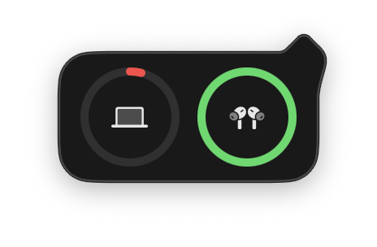
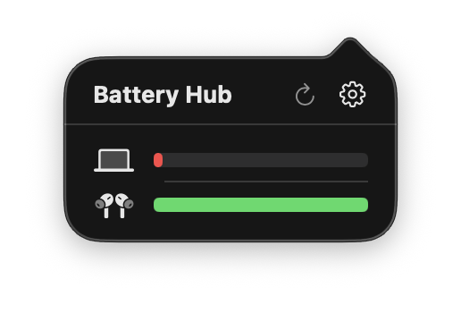
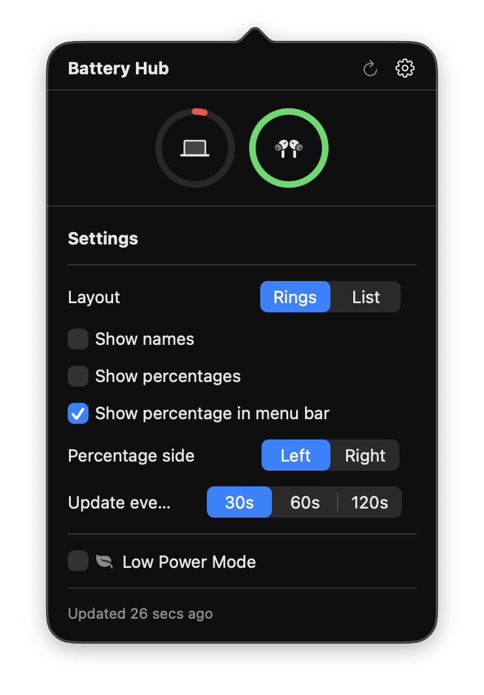
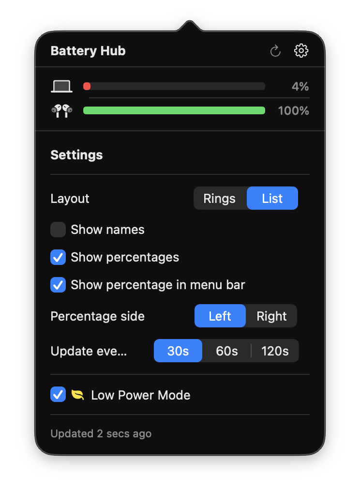

Overview
Battery Hub is a macOS menu bar application that consolidates battery information for your MacBook and all connected Bluetooth devices into one place. It replaces the native battery icon entirely, showing device-level battery status through ring or list visualisations.
macOS scatters battery information across the menu bar, Control Center, and a Batteries widget — each showing partial data in a different place. Battery Hub brings it all into a single click from the menu bar, with the level of detail and customisation that the native tools lack.
Why I Made This
I use AirPods daily and found myself repeatedly opening Control Center or the Batteries widget just to check levels. The native battery icon only shows the MacBook's charge — connected devices require navigating to a completely different interface.
I wanted a single menu bar icon that showed everything at a glance: MacBook, AirPods, any other connected Bluetooth device. And I wanted it to feel native — not like a third-party overlay, but like something Apple should have built.
User Experience
The app replaces the system battery icon in the menu bar with a custom rendered icon that matches Apple's design language. Hovering shows a compact ring view of all connected devices. Clicking opens the full popover with detailed battery information and settings.
Users can switch between two layout modes: a ring view with circular progress indicators (matching the style of Apple's Batteries widget) or a list view with horizontal progress bars for a more compact display. Device names, percentages, and menu bar display options are all toggleable.
The tool auto-detects any connected Bluetooth device that reports a battery level — AirPods, Magic Mouse, Magic Keyboard, game controllers, third-party headphones — and displays them alongside the MacBook's internal battery.
Key Features
- Custom menu bar icon — renders using native ControlCenter assets for pixel-perfect consistency. Colour-coded: green when charging, red at low levels, yellow in Low Power Mode. Optional percentage text on either side.
- Dual layout modes — ring view with circular progress indicators and SF Symbol device icons, or list view with horizontal progress bars. Switchable in settings.
- Hover and click popovers — hovering the menu bar icon shows a compact ring preview; clicking opens the full interface with settings. Two distinct NSPopover instances with different behaviours.
- Automatic device discovery — enumerates all connected Bluetooth devices via system_profiler, classifies them by type (AirPods, mouse, keyboard, controller), and identifies AirPods models (Pro, Gen 3, Max).
- Real-time updates — combines IOKit power source change notifications for instant MacBook battery updates with configurable polling intervals (30s, 60s, 120s) for Bluetooth devices.
- Low Power Mode toggle — switch Low Power Mode directly from the popover without opening System Settings. Uses a sudoers helper for passwordless toggling.
- AirPods battery merging — intelligently combines left and right AirPods into a single display when battery levels match, splitting them when they diverge.
- Persistent settings — all preferences (layout mode, display toggles, poll interval, percentage position) saved to UserDefaults and restored on launch.
Screenshots




Technical Architecture
Built as a Swift Package Manager executable targeting macOS 13+. The app uses SwiftUI for views, AppKit for menu bar integration, and Combine for reactive state management across the application.
The DeviceManager acts as the central state coordinator, combining IOKit power source change notifications (for instant MacBook updates) with timer-based Bluetooth polling. All settings are reactive via Combine — changing a preference immediately updates both the popover UI and the menu bar icon rendering. The menu bar icon itself is composited from native ControlCenter.app assets to match the system style exactly.
Reflections
This was my first native macOS application, and the biggest learning curve was understanding the relationship between SwiftUI and AppKit. The menu bar required NSStatusItem (AppKit), but the popover content is SwiftUI — bridging the two frameworks cleanly took some iteration. The hover popover interaction, using a custom NSView subclass for mouse tracking, was particularly instructive.
Working with IOKit and IOBluetooth also exposed a side of macOS development that feels very different from web work. There are no clean REST endpoints — you query power sources through C-level APIs, parse system profiler output, and handle edge cases around device connectivity. Getting AirPods case battery level right, or correctly merging left and right earbuds into a single display, required careful handling of incomplete or inconsistent data.
The project reinforced something I care about: that small, focused tools can be more valuable than large applications. Battery Hub does one thing, but it does it better than the three separate interfaces Apple provides.